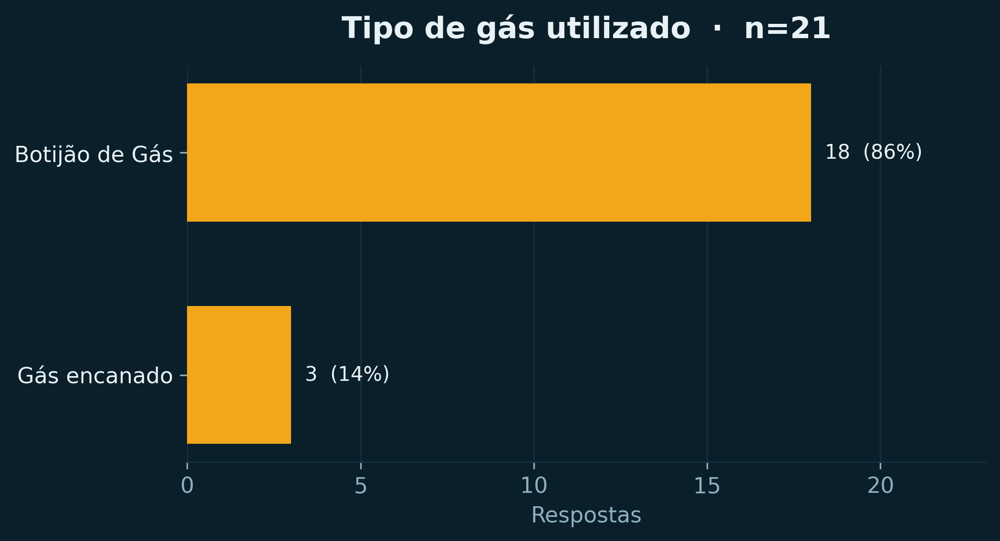
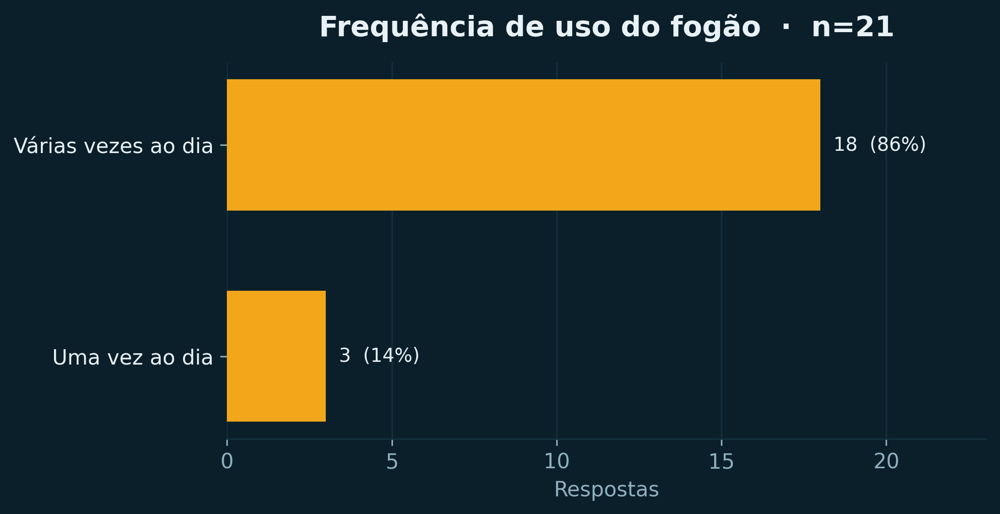
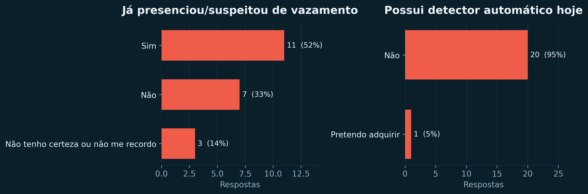
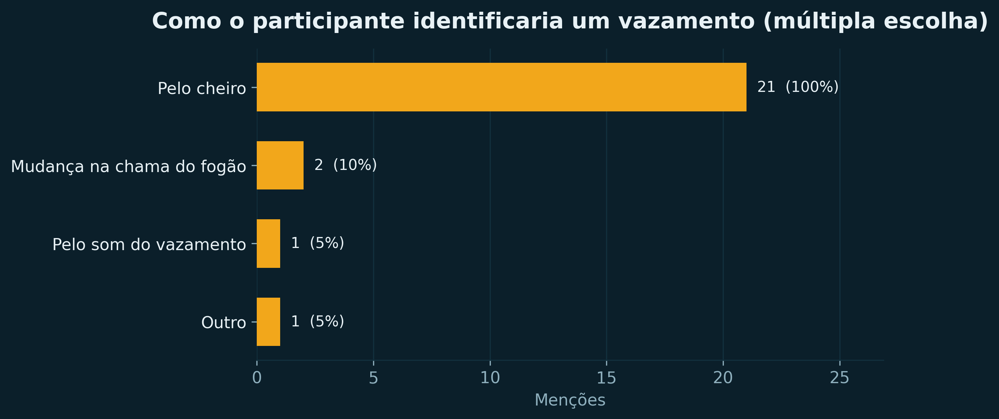
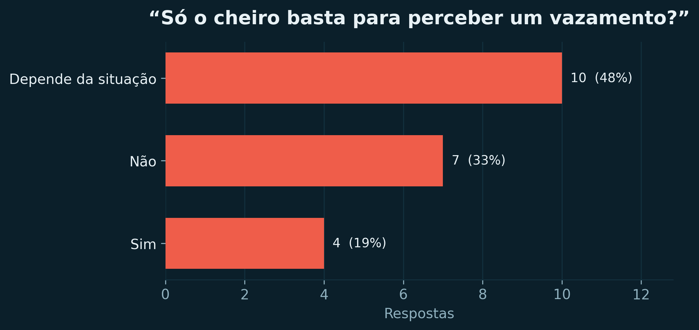
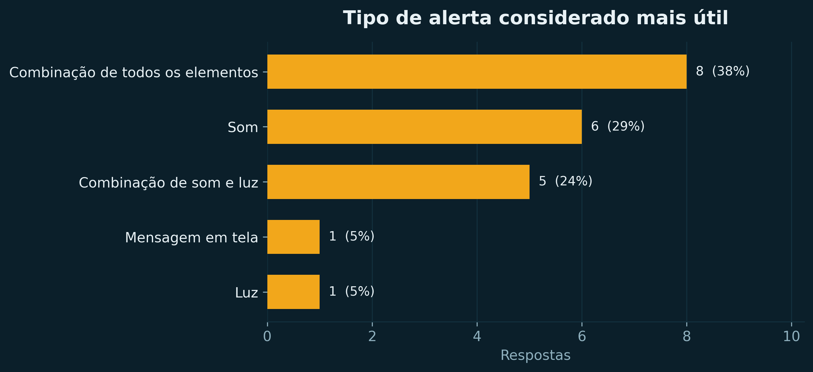
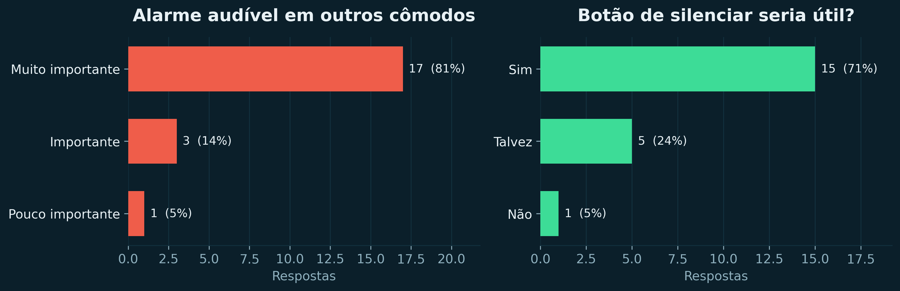
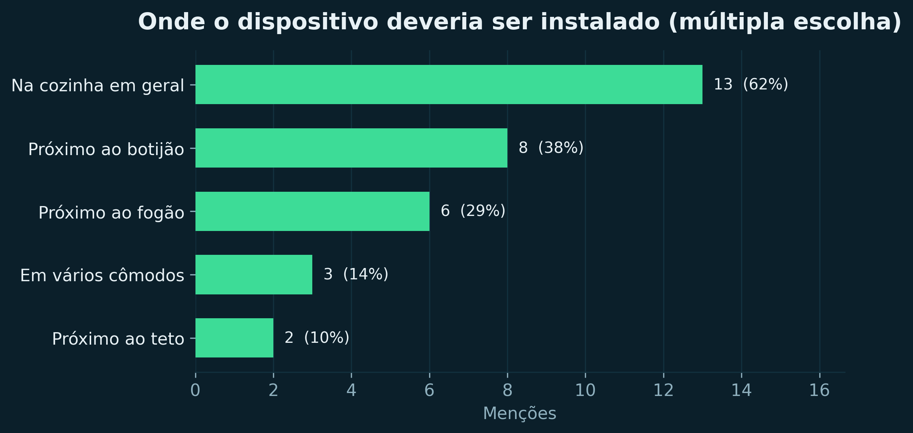
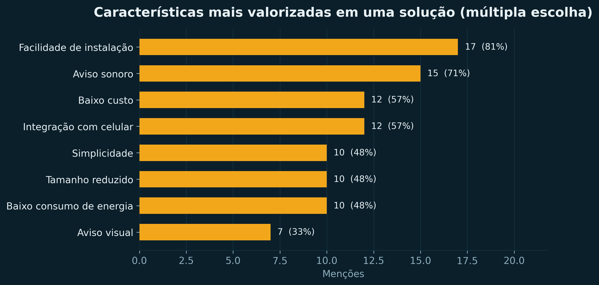

O sensor sente
O MQ-2 aquece um elemento de dióxido de estanho. Quanto mais gás no ar, menor a resistência e maior a tensão na saída analógica — uma faixa contínua, não um simples “tem ou não tem”.
Um alarme que não depende do seu olfato. O sensor MQ-2 sente o gás, o MSP430F5529LP decide e o aviso sai em três frentes ao mesmo tempo: som, luz e texto no LCD 16×2.
A sequência acima é a do próprio firmware: leitura subindo até passar de 1500 e disparar o alerta. Nada de áudio aqui — o buzzer só toca no simulador, depois de você interagir.
A0 · entrada analógicaleitura crua do ADC12
O controle abaixo é o valor bruto do ADC12: de 0 a 4095. Acima de 1500 o firmware trata como vazamento e aciona buzzer, LED e a segunda linha do LCD. Abaixo, volta a “ambiente seguro” e rearma o silenciamento. É a mesma regra do código que roda na placa.
Arraste o controle ou use as setas ← → do teclado. Home e End vão aos extremos.
O botão só silencia; quem rearma o alarme é a própria leitura cair abaixo de 1500.
O som só começa depois de um gesto seu. Ao abrir a página o silêncio é absoluto: o contexto de áudio nem é criado. Ele nasce no primeiro clique ou tecla dentro deste painel, e só soa quando a leitura passa de 1500 — com o tom de ~1 kHz do firmware (o TA2.1 no P2.4), de forma intermitente. O botão Silenciar buzzer corta o som na hora.
Leitura 0380: ambiente seguro, buzzer desligado.
do sensor à saídaquatro etapas
O caminho é sempre o mesmo, repetido centenas de vezes por segundo em um laço simples — sem sistema operacional, sem biblioteca de terceiros.
Caminho do sinal: o sensor MQ-2 entrega de 0 a 3,3 volts ao ADC12, que entrega de 0 a 4095 à decisão no MSP430. A decisão aciona LCD, buzzer e LED, e o botão na P2.1 silencia o buzzer por interrupção.
Volta: o botão na P2.1 gera interrupção e só marca “silenciado”. Quem devolve o sistema ao estado armado é a leitura voltar para 1500 ou menos — evitando que alguém desligue o alarme e esqueça.
O MQ-2 aquece um elemento de dióxido de estanho. Quanto mais gás no ar, menor a resistência e maior a tensão na saída analógica — uma faixa contínua, não um simples “tem ou não tem”.
O ADC12 do MSP430 lê essa tensão no canal A0 e devolve um inteiro de 0 a 4095. Ar limpo fica na casa das centenas; uma nuvem de gás de cozinha perto do sensor passa de 2000 sem esforço.
A cada volta do laço a leitura é comparada com 1500. Acima, o alarme liga; abaixo, desliga e rearma o silenciamento. O limiar é prático, ajustado em bancada — não é uma medida de concentração em ppm.
LCD, buzzer e LED ao mesmo tempo, porque a pesquisa de campo mostrou que é a combinação que as pessoas percebem melhor — e o alarme precisa ser ouvido de outro cômodo, não só na cozinha.
lista de materiaisprotótipo de bancada
Tudo foi montado sobre a própria LaunchPad e uma protoboard: nenhuma placa foi fabricada, nenhum componente soldado fora dos módulos. A conexão do LCD é I²C, o que economiza pinos do MSP430.
| Pino | Função no projeto | Ligado a | Observação |
|---|---|---|---|
| P6.0 / A0 | entrada analógica | saída AO do módulo MQ-2 | o módulo pode ir a 5 V; o divisor 10 kΩ/18 kΩ entrega até ≈3,21 V |
| P3.0 | SDA do barramento I²C | backpack I²C do LCD 16×2 | endereço 0x27, pull-ups no módulo |
| P3.1 | SCL do barramento I²C | backpack I²C do LCD 16×2 | SCL em ~620 Hz (UCB0BRW = 105 no firmware) |
| P2.4 | tom do buzzer | buzzer passivo | ~1 kHz pelo Timer A2 (canal TA2.1, duty de 50%) |
| P1.0 | LED de alarme | LED1 da LaunchPad | aceso enquanto houver risco (mesmo com o som silenciado) |
| P2.1 | botão de silenciamento | botão de usuário da LaunchPad | pull-up interno, interrupção de porta (P2IV = 0x04) |
| Item | Qtd. | Custo estimado | Observação |
|---|---|---|---|
| LaunchPad MSP430F5529LP | 1 | R$ 150,00 | traz o LED1, os botões e o depurador integrado |
| Sensor de gás MQ-2 | 1 | R$ 15 – 25 | módulo com saída analógica e comparador |
| Buzzer | 1 | R$ 5 – 10 | acionado por PWM, sem oscilador próprio |
| LCD 16×2 com módulo I²C | 1 | R$ 15 – 30 | backpack PCF8574, quatro fios no total |
| Resistores (10 kΩ + 18 kΩ do divisor, 1 kΩ de base) | 3 | R$ 0,40 | divisor 5 V → 3,21 V do sensor e base do transistor do buzzer (opcional) |
| Protoboard e jumpers | 1 conjunto | R$ 20,00 | montagem sem solda |
| LED1 | 1 | incluso | já existe na LaunchPad |
| Total do protótipo | R$ 205,40 – 235,40 | uma unidade, com o que já tínhamos em mãos |
A LaunchPad responde por quase 70% do custo — é a peça que faz mais do que o necessário aqui. Uma versão de produto trocaria o MSP430F5529 por um MSP430FR de 20 pinos e o LCD por um display sem backpack, ao preço de mais firmware.
n = 21 · Tally10 e 11 de maio de 2026
Antes de escolher os componentes, aplicamos um formulário de 12 perguntas em um condomínio residencial. As respostas mudaram o projeto: entraram o alerta redundante, o botão de silenciamento e a meta de ser ouvido de outro cômodo; ficou de fora a notificação por celular.
“Uma moradora relatou dificuldade para perceber o cheiro de gás. Houve um vazamento no fogão que ficou sem ser identificado por um período, e só foi percebido quando o técnico foi trocar o botijão.”
Cada pessoa citou em média 1,5 locais. Menções e fatia dos 21 respondentes.
| Local | Menções | % |
|---|---|---|
| Na cozinha em geral | 13 | 62% |
| Próximo ao botijão | 8 | 38% |
| Próximo ao fogão | 6 | 29% |
| Em vários cômodos | 3 | 14% |
| Próximo ao teto | 2 | 10% |
Pergunta de múltipla escolha: a soma das menções passa de 21 de propósito.
| Característica | Menções | % |
|---|---|---|
| Facilidade de instalação | 17 | 81% |
| Aviso sonoro | 15 | 71% |
| Baixo custo | 12 | 57% |
| Integração com celular | 12 | 57% |
| Simplicidade | 10 | 48% |
| Tamanho reduzido | 10 | 48% |
| Baixo consumo de energia | 10 | 48% |
| Aviso visual | 7 | 33% |









Como ler esses números: a amostra é de conveniência — 21 respostas compartilhadas no condomínio do pesquisador e com pessoas próximas, não uma amostra probabilística. Perguntas de múltipla escolha permitem mais de uma marcação, então a soma das menções passa de 21. A idade só passou a ser coletada a partir da quinta resposta, e o perfil ficou mais jovem (mediana de 21 anos) do que o público que mais precisa do aparelho.
Números embutidos na página.
adc12 + decisãofirmware em C
Trechos do firmware real do projeto — pinos centralizados em config.h, tom no buzzer passivo e a regra de decisão que roda igual no MSP430 e nos testes de PC. É a mesma regra que o simulador desta página executa: ler, comparar com 1500, acionar as saídas, rearmar o silenciamento.
/* ------------------------------------------------------------------
* config.h — fonte única dos pinos, do limiar e dos tons
* ------------------------------------------------------------------ */
#define PORTA_ADC 6 /* P6.0 = A0 (sensor MQ-2) */
#define PORTA_BUZZER 2 /* P2.4 = saída do Timer A2 */
#define PORTA_BOTAO 2 /* P2.1 = botão de silenciamento */
#define PORTA_LED 1 /* P1.0 = LED1 da LaunchPad */
#define LIMIAR_GAS_ADC 1500u /* limiar prático de bancada */
#define BUZZER_PERIODO_CCR0 1000u /* SMCLK 1 MHz / 1000 = 1 kHz */
#define BUZZER_CCR1_ALARME 500u /* 50% de duty => tom audível */
#define BUZZER_CCR1_REPOUSO 1000u /* >= período => saída alta, mudo */
#define LED_DIR_REG P1DIR /* LED1 como saída digital */
#define LED_OUT_REG P1OUT /* nível alto = LED aceso */
#define LED_PIN_BIT BIT0
/* ------------------------------------------------------------------
* buzzer.c — tom de ~1 kHz no P2.4, canal TA2.1 do Timer A2
* ------------------------------------------------------------------ */
void buzzer_inicia(void)
{
P2DIR |= BIT4; /* P2.4 como saída */
P2SEL |= BIT4; /* P2.4 na função do TA2 */
TA2CTL = TASSEL_2 | MC_1 | TACLR; /* SMCLK, modo "up" */
TA2CCR0 = BUZZER_PERIODO_CCR0 - 1u; /* fecha o período */
TA2CCTL1 = OUTMOD_7; /* reset/set: PWM no TA2.1 */
TA2CCR1 = BUZZER_CCR1_REPOUSO; /* começa mudo */
}
void buzzer_tom(uint16_t ccr1) /* 500 = tom, 1000 = silêncio */
{
TA2CCR1 = ccr1;
}
/* ------------------------------------------------------------------
* app.c — a regra de decisão (testada no PC, a mesma do alvo)
* ------------------------------------------------------------------ */
app_decisao_t app_avalia(app_estado_t *estado, uint16_t nivel_adc)
{
app_decisao_t decisao;
if (nivel_adc > (uint16_t)LIMIAR_GAS_ADC) { /* estritamente maior */
if (estado->mutado == 0u) {
decisao.situacao = APP_ALERTA;
decisao.tom_buzzer = BUZZER_CCR1_ALARME;
decisao.mensagem_lcd = "ALERTA DE GAS!";
} else {
decisao.situacao = APP_ALERTA_MUTADO;
decisao.tom_buzzer = BUZZER_CCR1_REPOUSO; /* calado */
decisao.mensagem_lcd = "ALERTA (MUTADO)";
}
/* Segurança: o LED fica aceso enquanto houver risco, inclusive com
* o buzzer silenciado. O botão cala o SOM, nunca o aviso visual. */
decisao.led_alarme = 1u;
} else {
estado->mutado = 0u; /* rearme automático do mute */
decisao.situacao = APP_SEGURO;
decisao.tom_buzzer = BUZZER_CCR1_REPOUSO;
decisao.led_alarme = 0u;
decisao.mensagem_lcd = "Ambiente Seguro";
}
return decisao;
}
/* ------------------------------------------------------------------
* main.c — laço principal (~2 s por volta)
* ------------------------------------------------------------------ */
LED_DIR_REG |= LED_PIN_BIT; /* P1.0 = LED1 como saída */
LED_OUT_REG &= (uint8_t)~LED_PIN_BIT;
for (;;) {
uint16_t nivel;
app_decisao_t d;
char linha1[LCD_TAM_LINHA];
/* 1. botão primeiro: uma pressão confirmada já silencia neste ciclo */
if (botao_pressao_confirmada() != 0u) {
app_mutar(&estado);
}
/* 2. só então lê o sensor e decide */
nivel = adc_le_valor(); /* P6.0 / A0 */
d = app_avalia(&estado, nivel);
formata_linha_gas(nivel, linha1); /* "Nivel Gas: NNNN" */
buzzer_tom(d.tom_buzzer);
if (d.led_alarme != 0u) {
LED_OUT_REG |= LED_PIN_BIT; /* LED1 aceso */
} else {
LED_OUT_REG &= (uint8_t)~LED_PIN_BIT; /* LED1 apagado */
}
lcd_escreve_linha(0u, linha1);
lcd_escreve_linha(1u, d.mensagem_lcd);
__delay_cycles(APP_CICLOS_ENTRE_LEITURAS);
}
/* ------------------------------------------------------------------
* botao.c — interrupção de P2.1 (pull-up interno, borda de descida)
* ------------------------------------------------------------------ */
#pragma vector = PORT2_VECTOR
__interrupt void ISR_Botao_Mute(void)
{
switch (P2IV) { /* ler P2IV já limpa a flag */
case BOTAO_P2IV_VALOR: /* P2.1 => P2IV = 0x04 */
botao_evento = 1u;
break;
default:
break; /* outro pino: ignora */
}
}o que ficou de forasem maquiagem
Um projeto de disciplina tem prazo e orçamento. Estas são as três fronteiras que o protótipo ainda não cruzou — e o que aprendemos em cada uma delas.
A resposta do sensor não é linear, muda com umidade e temperatura e precisa de burn-in de 24 a 48 horas antes de estabilizar. O limiar de 1500 é um corte prático: percebe o aumento de gás no ar, mas não mede concentração. Sem calibração com gás de referência, não dá para afirmar a quantos ppm o alarme dispara — e o relatório diz isso com todas as letras.
Integração com celular ficou entre as características mais citadas (12 menções, empatada com baixo custo), mas exigiria módulo Wi-Fi ou GSM, mais firmware, mais consumo e mais custo. Registramos como próximo passo em vez de prometer o que o protótipo não faz.
Falta a caixa: precisa de ventilação para o sensor respirar, abertura para o som do buzzer e proteção contra respingos de gordura da cozinha. Como está, o conjunto não pode ficar instalado em definitivo perto do fogão — e a alimentação ainda depende do cabo USB.